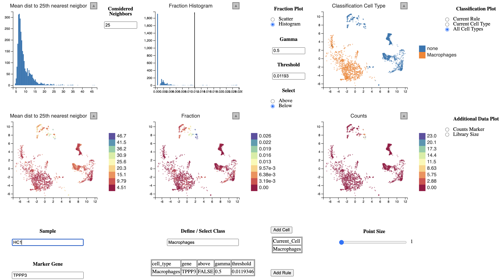

covid-balf-study.RmdThis vignette shows an example how lcsc can be used for real data analyses.
For demonstration purposes we will be using the dataset created in the study “Single-cell landscape of bronchoalveolar immune cells in COVID-19 patients” by Liao M. et al. In this study, immune cells were isolated and sequenced from Bronchoalveolar Lavage Fluid (BALF) which was taken from healthy subjects and patients diagnosed with COVID-19.
The authors kindly provided the processed data as Seurat object which can be downloaded here. Otherwise we could simply run the standard preprocessing steps.
# Download
download.file("http://cells.ucsc.edu/covid19-balf/nCoV.rds", "nCoV.rds")
# Or directly load into R (not recommended, size is about 3G GB)
balf <- readRDS(url("http://cells.ucsc.edu/covid19-balf/nCoV.rds","rb"))
library(Seurat)
#> Attaching SeuratObject
balf <- readRDS("../data/nCoV.rds")
balf
#> An object of class Seurat
#> 25916 features across 66452 samples within 2 assays
#> Active assay: RNA (23916 features, 2000 variable features)
#> 1 other assay present: integrated
#> 3 dimensional reductions calculated: pca, tsne, umapTo run lcsc we need to extract the following data.
counts <- GetAssayData(balf, "counts")
dim(counts)
#> [1] 23916 66452
pc_space <- Embeddings(balf, "pca")
dim(pc_space)
#> [1] 66452 100
embedding <- Embeddings(balf, "umap")
dim(embedding)
#> [1] 66452 2
meta_data <- balf[[]]
head(meta_data[c("sample", "sample_new", "disease")])
#> sample sample_new disease
#> AAACCTGAGACACTAA_1 C51 HC1 N
#> AAACCTGAGGAGTACC_1 C51 HC1 N
#> AAACCTGAGGATATAC_1 C51 HC1 N
#> AAACCTGAGGTCATCT_1 C51 HC1 N
#> AAACCTGCACGGATAG_1 C51 HC1 N
#> AAACCTGCAGGGAGAG_1 C51 HC1 NBased on these meta we will generate the cells that only contains the needed information and will be used to subset the counts according to which sample is selected.
sample_column <- "sample_new" # column for sample name
disease_column <- "disease" # column for disease state
cells = tibble::tibble(
id = rownames(meta_data),
sample = meta_data[[sample_column]],
disease = meta_data[[disease_column]]
)
head(cells)
#> Registered S3 method overwritten by 'cli':
#> method from
#> print.boxx spatstat.geom
#> # A tibble: 6 × 3
#> id sample disease
#> <chr> <fct> <fct>
#> 1 AAACCTGAGACACTAA_1 HC1 N
#> 2 AAACCTGAGGAGTACC_1 HC1 N
#> 3 AAACCTGAGGATATAC_1 HC1 N
#> 4 AAACCTGAGGTCATCT_1 HC1 N
#> 5 AAACCTGCACGGATAG_1 HC1 N
#> 6 AAACCTGCAGGGAGAG_1 HC1 NNow lets check how many cells we have in each sample.
table(cells$sample)
#>
#> HC1 HC2 HC3 HC4 O1 O2 O3 S1 C1 C2 C3 C4 C5
#> 8466 8189 2566 2718 3542 3411 363 11872 17340 1292 1718 2071 2904We notice two things. The total number of cells is not at all equally distributed among all samples and also the authors seem to have mispelled some of the sample names. Let’s replace the “O” with an “S”.
cells$sample <- stringr::str_replace(cells$sample, "O(?=[1-3])", "M")
cells$sample <- stringr::str_replace(cells$sample, "S1", "S0")
cells$sample <- stringr::str_replace(cells$sample, "^C(?=[1-5])", "S")
table(cells$sample)
#>
#> HC1 HC2 HC3 HC4 M1 M2 M3 S0 S1 S2 S3 S4 S5
#> 8466 8189 2566 2718 3542 3411 363 11872 17340 1292 1718 2071 2904So we actually have 4 samples as healthy control (HC), 3 samples from moderate (M) COVID-19 cases and 6 samples from severe cases (S). Based on the sample name we can add a condition column to the cells tibble.
cells$condition <- stringr::str_remove(cells$sample, "\\d")
table(cells$condition)
#>
#> HC M S
#> 21939 7316 37197In the next step we load lcsc and compute the nearest neighbor graph per sample.
library(lcsc)
nn <- run_nn(cells,
pc_space,
k=50, # Compute 50 nearest neigbors per cell
dim=30) # Using 30 PCs to compute NN
str(nn)
#> List of 2
#> $ idx : num [1:66452, 1:50] 1 2 3 4 5 6 7 8 9 10 ...
#> $ dists: num [1:66452, 1:50] 0 0 0 0 0 0 0 0 0 0 ...Now we can load the application and start to annotate cells per sample. This requires some manual effort, but we do not rely on integration methods for multiple samples or unsupervised learning methods.
lc_vis(cells=cells,
counts=counts,
pc_space=pc_space,
embedding=embedding,
nn=nn,
k=30 # Smoothing the expression over 50 nearest neighbors
)The classification of macrophages in each sample could look like this. We define macrophages as cells which express CD68 and do not express CD3E (T-cells) or TPPP3 (Epithelial cells).

To go back and refine the annotation one should save the annotation and the rule list.
save(annotations, rules, file = "macrophage_annotation.RData")If one wishes to refine the annotation at some point, one can simply reload the application as done above and overwrite the annotations and rules objects by loading the .RData file.
load("macrophage_annotation.RData")Once we have annotated our cell type of interest we could perform for example differential gene expression analysis between the cells from the same cell type under different conditions (e. g. mild vs. severe COVID-19 infection). As we have only annotated macrophages so far, we will compare their expression profiles.
First, we will need to create pseudobulks for macrophages in each sample from the “M” (mild) and “S” (severe) samples.
# We want to compare macrophages in mild vs. severe COVID-19
mild_samples <- unique(cells$sample)[grepl("M", unique(cells$sample))]
head(mild_samples)
#> [1] "M1" "M2" "M3"
severe_samples <- unique(cells$sample)[grepl("S", unique(cells$sample))]
head(severe_samples)
#> [1] "S1" "S0" "S2" "S3" "S4" "S5"
cell_type = "Macrophages"
mild_matrix <- NULL
for (sample in mild_samples) {
cell_type_barcodes <- annotations[[sample]][[cell_type]]$barcode
mild_matrix <- cbind(mild_matrix, Matrix::rowSums(counts[, cell_type_barcodes]))
}
colnames(mild_matrix) <- mild_samples
head(mild_matrix)
#> M1 M2 M3
#> AL627309.1 9 8 0
#> AL669831.5 163 133 1
#> FAM87B 9 4 0
#> LINC00115 120 199 14
#> FAM41C 54 64 1
#> NOC2L 1430 1292 53
severe_matrix <- NULL
for (sample in severe_samples) {
cell_type_barcodes <- annotations[[sample]][[cell_type]]$barcode
severe_matrix <- cbind(severe_matrix, Matrix::rowSums(counts[, cell_type_barcodes]))
}
colnames(severe_matrix) <- severe_samples
head(severe_matrix)
#> S1 S0 S2 S3 S4 S5
#> AL627309.1 30 10 4 6 6 3
#> AL669831.5 174 114 40 32 61 70
#> FAM87B 11 0 0 0 0 0
#> LINC00115 375 132 29 59 37 65
#> FAM41C 86 82 22 50 37 44
#> NOC2L 2357 787 147 563 296 772As we will be using DESeq2 for our differential gene epxression analysis, we have to create a small dataframe describing the samples (“coldata”).
coldata <- data.frame(sample=c(mild_samples, severe_samples))
coldata$condition <- ifelse(startsWith(coldata$sample, "M"), "mild", "severe")
coldata
#> sample condition
#> 1 M1 mild
#> 2 M2 mild
#> 3 M3 mild
#> 4 S1 severe
#> 5 S0 severe
#> 6 S2 severe
#> 7 S3 severe
#> 8 S4 severe
#> 9 S5 severeNow we can simply run DESeqDataSetFromMatrix.
suppressPackageStartupMessages(library(DESeq2))
dds <- DESeqDataSetFromMatrix(countData = cbind(mild_matrix, severe_matrix),
colData = coldata,
design = ~ condition)
#> converting counts to integer mode
#> Warning in DESeqDataSet(se, design = design, ignoreRank): some variables in
#> design formula are characters, converting to factors
dds <- DESeq(dds)
#> estimating size factors
#> estimating dispersions
#> gene-wise dispersion estimates
#> mean-dispersion relationship
#> final dispersion estimates
#> fitting model and testing
res <- results(dds)And we could for example look at the genes assocatiated with the lowest adjusted p-values.
suppressPackageStartupMessages(library(dplyr))
res %>%
as.data.frame %>%
filter(padj < 0.1) %>%
arrange(desc(log2FoldChange)) %>%
select(-pvalue) %>%
slice_head(n=10)
#> baseMean log2FoldChange lfcSE stat padj
#> IGKV3-11 4567.8948 28.74300 3.434250 8.369512 4.657479e-14
#> IGHV5-10-1 2336.6273 27.93190 3.434259 8.133311 2.832888e-13
#> IGKV1-9 1319.6604 27.13907 3.063320 8.859365 8.042479e-16
#> IGLV3-27 1222.8432 27.13060 3.434277 7.899948 1.394296e-12
#> IGHV1-46 1329.1049 26.95968 3.434274 7.850184 1.972134e-12
#> IGLV4-69 1046.2495 26.91493 3.434283 7.837134 2.084026e-12
#> IGHV3-74 973.1023 26.81567 3.434286 7.808223 2.541783e-12
#> IGLV2-23 814.9891 26.56442 3.434295 7.735043 4.005831e-12
#> IGKV1-6 777.4242 26.40558 3.434297 7.688786 5.641161e-12
#> IGHV1-24 655.1797 26.26125 3.434308 7.646738 7.385729e-12